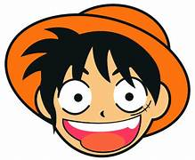
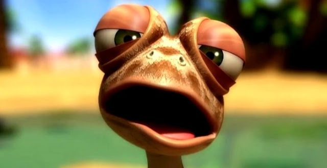
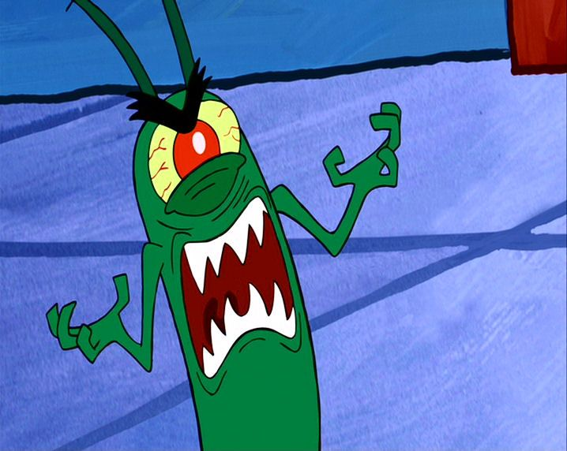
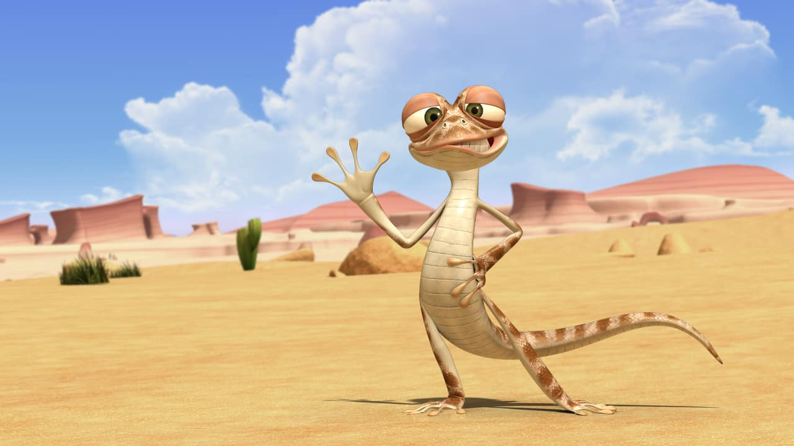
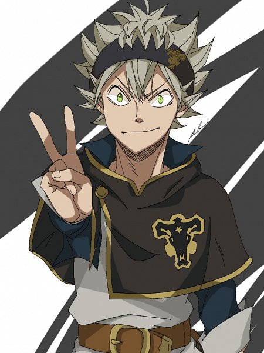

<!DOCTYPE html>
<html lang="en">
<head>
  <meta charset="UTF-8">
  <meta name="viewport" content="width=device-width, initial-scale=1.0">
  <title>rovidokumen</title>
</head>
<body>
  <link rel="stylesheet" href="css/bootstrap.min.css" />
</body>
</html>
<!doctype html>


<html lang="en">
  <head>
    <!-- Required meta tags -->
    <meta charset="utf-8">
    <meta name="viewport" content="width=device-width, initial-scale=1">

    <!-- Bootstrap CSS -->
    

    <title>Hello, world!</title>
  </head>
  <body>
    <nav class="navbar navbar-expand-lg navbar-dark bg-primary">
  <div class="container-fluid">
    <a class="navbar-brand" href="#">ROVI</a>
    <button class="navbar-toggler" type="button" data-bs-toggle="collapse" data-bs-target="#navbarSupportedContent" aria-controls="navbarSupportedContent" aria-expanded="false" aria-label="Toggle navigation">
      <span class="navbar-toggler-icon"></span>
    </button>
    <div class="collapse navbar-collapse" id="navbarSupportedContent">
      <ul class="navbar-nav me-auto mb-2 mb-lg-0">
        <li class="nav-item">
          <a class="nav-link active" aria-current="page" href="#">Home</a>
        </li>
        <li class="nav-item">
          <a class="nav-link" href="#">Link</a>
        </li>
        <li class="nav-item dropdown">
          <a class="nav-link dropdown-toggle" href="#" id="navbarDropdown" role="button" data-bs-toggle="dropdown" aria-expanded="false">
            Dropdown
          </a>
          <ul class="dropdown-menu" aria-labelledby="navbarDropdown">
            <li><a class="dropdown-item" href="#">Action</a></li>
            <li><a class="dropdown-item" href="#">Another action</a></li>
            <li><hr class="dropdown-divider"></li>
            <li><a class="dropdown-item" href="#">Something else here</a></li>
          </ul>
        </li>
        
      <form class="d-flex">
        <input class="form-control me-2" type="search" placeholder="Search" aria-label="Search">
        <button class="btn btn-outline-success" type="submit">Search</button>
      </form>
    </div>
  </div>
</nav>
    

    <!-- Optional JavaScript; choose one of the two! -->

    <!-- Option 1: Bootstrap Bundle with Popper -->
    <script src="https://cdn.jsdelivr.net/npm/bootstrap@5.0.2/dist/js/bootstrap.bundle.min.js" integrity="sha384-MrcW6ZMFYlzcLA8Nl+NtUVF0sA7MsXsP1UyJoMp4YLEuNSfAP+JcXn/tWtIaxVXM" crossorigin="anonymous"></script>

    <!-- Option 2: Separate Popper and Bootstrap JS -->
    <!--
    <script src="https://cdn.jsdelivr.net/npm/@popperjs/core@2.9.2/dist/umd/popper.min.js" integrity="sha384-IQsoLXl5PILFhosVNubq5LC7Qb9DXgDA9i+tQ8Zj3iwWAwPtgFTxbJ8NT4GN1R8p" crossorigin="anonymous"></script>
    <script src="https://cdn.jsdelivr.net/npm/bootstrap@5.0.2/dist/js/bootstrap.min.js" integrity="sha384-cVKIPhGWiC2Al4u+LWgxfKTRIcfu0JTxR+EQDz/bgldoEyl4H0zUF0QKbrJ0EcQF" crossorigin="anonymous"></script>
    -->
    <br>
    <section class="jumbotron text-center">
  
  <h1 class="display-4">ROVI ATDIANSYAH</h1>
  <p class="lead">STUDENT / REKAYASA PERANGKAT LUNAK
  </p>
  <P
  <hr class="my-4">
  <p>It uses utility classes for typography and spacing to space content out within the larger container.</p>
  <a class="btn btn-primary btn-lg" href="#" role="button">Learn more</a>
  <hr>

</section>
  <svg xmlns="http://www.w3.org/2000/svg" viewBox="0 0 1440 320"><path fill="#0099ff" fill-opacity="1" d="M0,256L57.6,64L115.2,128L172.8,288L230.4,192L288,256L345.6,96L403.2,288L460.8,160L518.4,128L576,288L633.6,128L691.2,256L748.8,0L806.4,160L864,224L921.6,224L979.2,160L1036.8,128L1094.4,288L1152,288L1209.6,32L1267.2,32L1324.8,192L1382.4,256L1440,288L1440,320L1382.4,320L1324.8,320L1267.2,320L1209.6,320L1152,320L1094.4,320L1036.8,320L979.2,320L921.6,320L864,320L806.4,320L748.8,320L691.2,320L633.6,320L576,320L518.4,320L460.8,320L403.2,320L345.6,320L288,320L230.4,320L172.8,320L115.2,320L57.6,320L0,320Z"></path></svg>


  <div class="row text-center">
        <h1>ABOUT ME</h1>

        
        <div class="row">
          <div class="col">
            <p>"Red-Haired" Shanks,[9] commonly known as just "Red Hair",[12] is the chief[5] of the Red Hair Pirates[2] and one of the Four Emperors that rule over the New World.[3]

Sailing with the Roger Pirates since he was an infant, Shanks would begin his pirate career on their ship as an apprentice alongside Buggy, before forming his own crew following Roger's death.[4]</p>
        </div class="row">
        <div class="col">
          <p>Ever since the beginning of the series, Shanks has been an important background character, usually being shown accompanying Luffy's ever-growing reputation as a pirate. He is a late, but still vital ally during both the Marineford and Wano Country Arcs. He and his crew also have a sizable role in One Piece Film: Red, which centers on Uta, Shanks' adoptive daughter. </p>
      </div>
    </div>
    <section class="row text-center">
      
        

    </div>
  </div>
</div>
<!--- project-->
<section id="project">
  <div class="container">
    <div class="row text-center">
      <div>
        
        <h2>Project</h2>
      </div>
    </div> 
    
    <div class="row">
      <div class="col-md-4" >
        
        <div class="card-body">
          <p class="card-text">Oscar's Oasis (Prancis Oscar & Co) adalah sebuah kartun animasi non-verbal yang diproduksi oleh TeamTO dan Tuba Entertainment dalam asosiasi dengan Cake Entertainment yang berdasarkan pada acara aslinya yang disiarkan di Disney Channel Asia..</p>
        </div>
      </div>
    
      <div class="col-md-4" >
        
        <div class="card-body">
          <p class="card-text">Plankton adalah musuh utama Mr. Krabs, tetapi mereka berteman ketika masih kecil dan beberapa episode.</p>
        </div>
      </div>

      <div class="col-md-4" >
        
        <div class="card-body">
          <p class="card-text">Seekor kadal yang bernama Oscar selalu mendapatkan masalah dari temannya,tinggal di gurun pasir yang terdapat di beberapa adegan ia kehausan dan mencari minum. Dia juga memiliki pacar sejenis kadal yang cantik.</p>
        </div>
      </div>
<div class="row">
      <div class="col-md-4" >
        
        <div class="card-body">
          <p class="card-text">Bernard (Hangul:빼꼼, RR:Ppaekkom, MR:Ppaekkom, diromanisasikan sebagai Backkom di Asia-Pasifik, atau Bernard Bear dalam penggunaan sehari-hari) adalah sebuah animasi pendek dengan durasi 3 menit ber-genre serial televisi anak-anak. Animasi ini menceritakan tentang Bernard, seekor beruang kutub, yang selalu sial di setiap episodenya akibat ulahnya atau tokoh lain..</p>
        </div>
      </div>
    
      <div class="col-md-4" >
        
        <div class="card-body">
          <p class="card-text">Asta 「アスタ Asuta」[1] adalah anak yatim piatu yang dibesarkan di bawah asuhan gereja di desa Hage.[4] setelah ibunya meninggalkannya di depan pintu gereja.[5][6] Setelah menginjak 15 tahun, Asta menerima grimoire semanggi berdaun lima dengan iblis Anti Sihir di dalamnya.[7] Dia bergabung di Ksatria Sihir dari Kerajaan Semanggi, pasukan dari Banteng Hitam[8] dan menjadi Ksatria Sihir Senior Kelas.</p>
        </div>
      </div>

      <div class="col-md-4" >
        
        <div class="card-body">
          <p class="card-text">Mr. Bean adalah serial komedi televisi dari Britania Raya yang dibintangi oleh Rowan Atkinson. Program ini diproduksi oleh Tiger Television, yang kemudian berganti nama menjadi Television Aspect (perusahaan di mana Atkitson menanam sahamnya).</p>
        </div>
    </div>


  </div>
</section>
<!---akhir project-->
    </section>
<br>


<!--contact-->
      <section id="contact">
       <div class="container">
        <div class="row text-center">      
        <div class="col">
        <h2>contact me</h2>
        </div>
        </div>
    <div class="row justify-content-center">
        <div class="col-md-7">
          <form>
            <div class="mb-3">
             <label for="Name" class="form-label">Nama lengkap</label>
             <input type="text" class="form-control" id="Name" aria-describedby="Name">
             </div>
        <div class="mb-3">
            <label for="email" class="form-label">email</label>
            <input type="email" class="form-control" id="email" aria-describedby="email">
            </div>
            <div class="mb-3">
            <label for="No Handphone" class="form-label">No Handphone</label>
            <input type="No Handphone" class="form-control" id="email" aria-describedby="No Handphone">
            </div>
        <div class="mb-3">
             <label for="pesan" class="form-label">pesan</label>
             <textarea class="form-control" id="pesan" rows="3"></textarea>
             </div>

             <!--footer-->
             <footer class="bg-primary text-white text-center p-3">
              <p>Created by <i class="bi bi-emoji-kiss"></i> <by <a
                href="https://instagram.com/anmlygg?igshid=MzzR10DBiNWF1ZA==
                class="text-white font-weight-bold">Rovi
              Atdiansyah</a></p>
             </footer>
             <!--akhir footer-->


